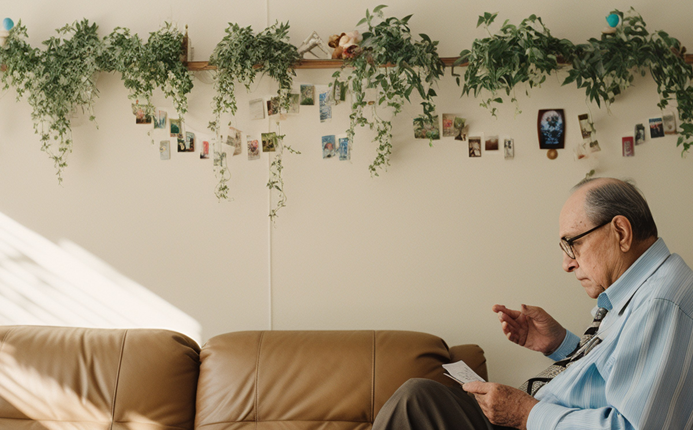
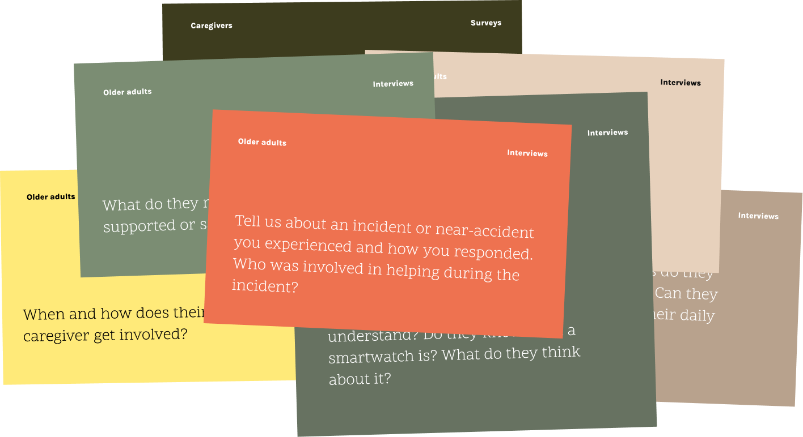
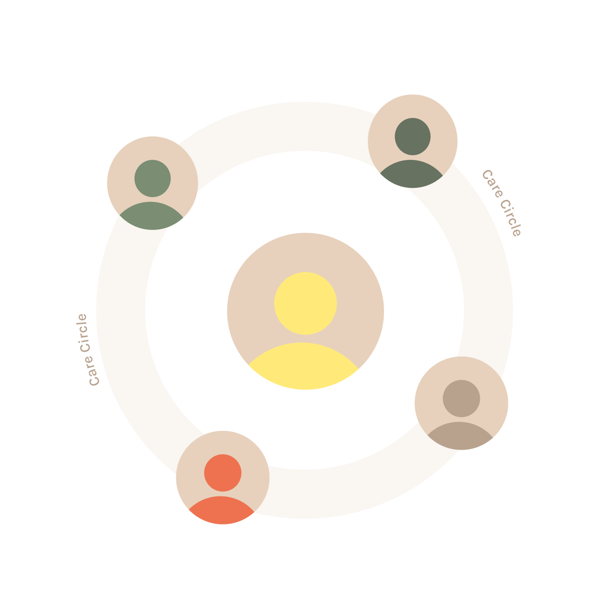

Ellie Care helps older adults
integrate more support as they age
Aging often leads to challenges such as frailty or cognitive decline, affecting 25% of seniors over 65.
Subtle signs like forgetfulness or falls signal a progressive loss of independence, making the transition difficult for both older adults and their families.
Ellie provides a simple and adaptable IoT ecosystem to support these transitions, combining emergency management features, health tracking, and family connectivity.
Older adults are resistant to seeking or accepting help until an incident, such as a fall, occurs.
Existing market solutions like SOS buttons are often unreliable or unintuitive.
Families struggle to coordinate care while respecting the autonomy of the older adult.
Qualitative: ethnographic research and interviews
Quantitative: surveys for both aging adults and their support networks
Market analysis of existing solutions


Swipe to read
Older adults prefer familiar and non-intrusive devices.
Caregivers need tools to collaborate, and coordinate help during emergencies.
We need solutions that adapt as health conditions evolve.